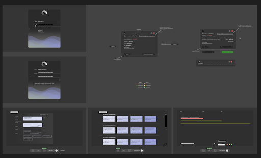
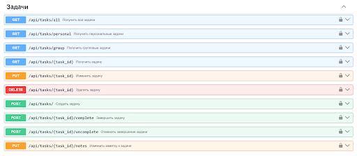
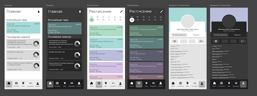
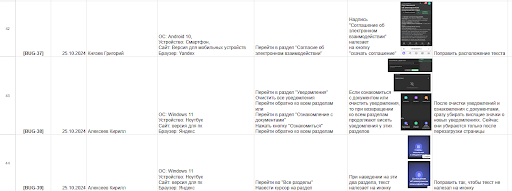
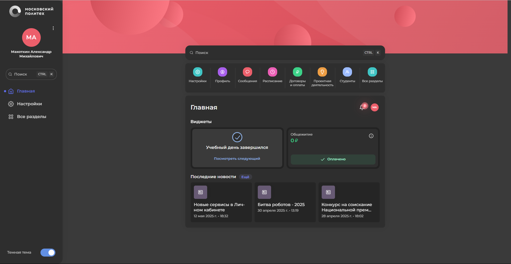

Продолжается работа над реализацией минимального функционала для сервиса политайм.
Была разработана база данных и MVP серверной части. Выполнена документация
API, регистрация и авторизация с ипользованием jwt токенов, а также подтверждение
почты и рассылка email'ов. Команда дизайна представила свои наработки.


Достигнуто большое количество результатов в разработке Android версии.
Были улучшены меры безопасности, исправлены визуальные баги. Свайп-пейджер
имплементирован в приложение вместе с иконками под гайдлайн Android версии.
Также началась разработка основного сплеш экрана. В IOS версии добавлены
прототипы из Figma.

Была организована работа команды через регулярные встречи, что позволяет
оперативно обсуждать выявленные баги и распределять задачи. На промежуточном этапе
проекта создана упорядоченная база данных с актуальными багами личного
кабинета. На текущий момент их 51. Контакт с техническим руководителем
находится в стадии согласования. В планах полноценно присоединиться к
команде разработки ЛК.

